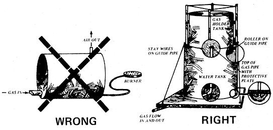

I have received letters from methane-from-manure enthusiasts with ! ! e photographs showing digesters and storage gas holders they have built.
One method of storing the methane gas, the wrong way has come to to my attention from a few of the letters. It is not, emphatically NOT the method I have described in the publication "Methane Digesters for Fuel Gas and Fertilizer" and the larger book "Practical Building of Methane Power Plants for Rural Energy and Independence". In fact it breaks the most important safety precaution in storing gas-NEVER MIX GAS AND AIR and then ignite it. It will EXPLODE if the mixture of gas to air is between 1 in 4 and 1 in 14, (between 7% and 25% gas to air mixture). No chances should be taken just outside these limits.
The second rule is that the gas should be piped and stored under pressure. It can be very light pressure such as a floating gas holder, but it must always be under enough positive pressure to prevent air entering the digester, piping, and/or storage tanks.
The drawing below shows that both these rules are not being applied. There is no way to know what the mixture of gas and air is in such a tank. (The gas may be lighter or heavier than air depending on the stages of decomposition in ,I) the digester.) What is wrong with this method is that the gas being introduced at the bottom of the tank will not rise at a level rate like water filling a tank, forcing air out. It will mix with the air (and oxygen in it) to create explosive mixture.
If the mixture is ignited at a burner outside the tank it will EXPLODE back into the tank. If the mixture were used in an engine, the engine might backfire and EXPLODE the tank. There is NO WAY this design of storage be used safety. Apart from the extreme danger there is only one way to withdraw the gas mixture from a fixed capacity tank, and that is to fill it with water thus forcing the mixture out. This is not practical in most cases. As a a final warning, a good example of the dangers of methane gas are to be found in underground mines. Odorless methane seeps into mines and mixes with air. The final deadly dangerous factor is that the mixture is confined in a "closed container. A flame, or even a spark, can and does result in the tragic accidents and loss of miners fives, of which we all know.
There is a right way to store gas. On the positive side, a well designed floating gas holder, guided so that it can rise and fall according to the amount of gas entering or leaving it, free of oxygen inside, is so safe that if it should be ruptured by lightning, some strange accident, or even by an incendiary device, the gas would merely burn. It would not explode since there would be no oxygen in it from the start, and no oxygen or air ever permitted to enter the gas holder, digester or piping at any time.
When contributing to and writing the two publications on methane, the safety factors were thoroughly researched, checked and re-checked for omissions, ambiguities, mulled over by a lawyer, and made as complete as they could be. It was impossible to foresee the adoption of a "gas holder" as shown in the drawing of the WRONG one. In theory and in practice it is useless and downright dangerous.
Another safe way to store gas is in pressure cylinders. These must, by law, be legally authorized, tested pressure vessels and certified by an approved authority who will present a certificate of the test done. This must be repeated at regular time intervals.
To attempt to contact every reader of the two publications is impossible. but with an initial outlay of a considerable amount of money, and through different news media, this warning is being broadcast by every available means to order to try to prevent any anyone being injured even if the blame is in no way attributable to what I have written.
L. John Fry
1223 N. Nopal Street
Santa Barbara, CA 93103, USA
|
|
 |
|